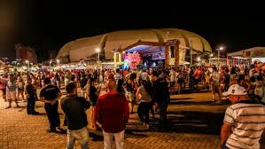

Mirassol Hoje
- Constante crescimento
- Progresso aliado à qualidade de vida.
Hoje

Antigamente

Economia
- De origem agrícola, Mirassol tornou-se economia moderna e diversificada.
- Serviços e comércio (68%) são os principais setores da cidade.
- Indústria e agropecuária completam a base produtiva local.
Cultura e Vida Social
- Tradições religiosas e festas populares ainda são muito valorizadas.
- O Programa Viver promove envelhecimento ativo e inclusão digital.
- 13,57% da população é composta por idosos (Prefeitura, 2024).
Festa junina em mirassol
